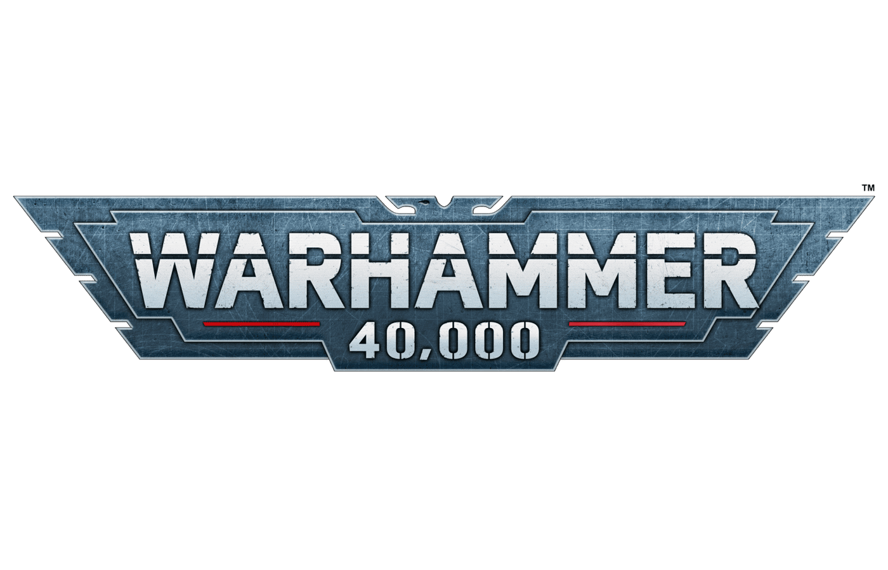

Üdv a harcmezőn
Ez a web a Warhammer40k témát szeretné elmagyarázni a kezdő Space Marine-nak akik most kezdik a pályájukat az Emperor szolgálatában.

Lore
Az emberiség birodalma küzd a káosszal és minden más rettenettel.
Frakciók
Space Marine-ok, Orkok, Eldák , Tauk és a Chaos Marine-ok.
Arzenál
Fegyverek, páncélok és minden, ami a túléléshez kell.